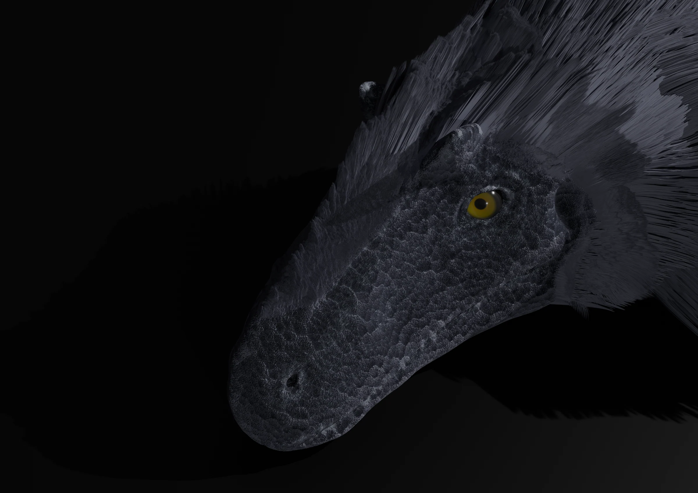
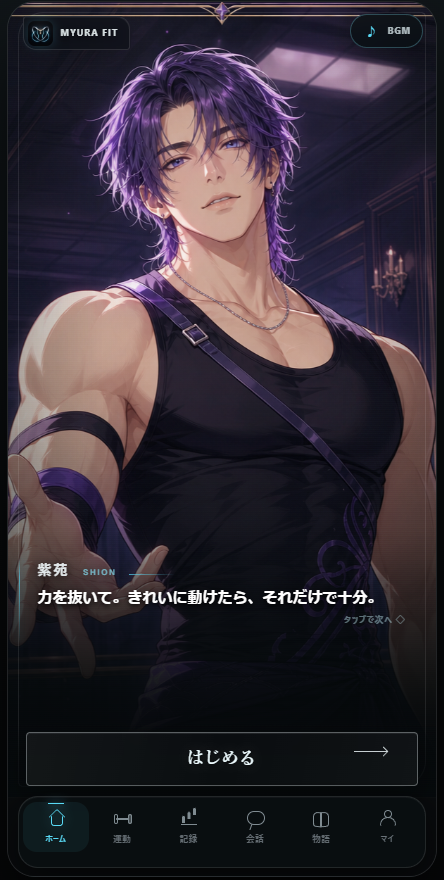
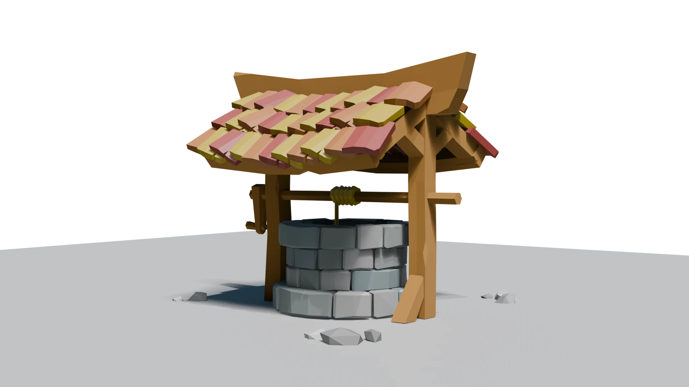
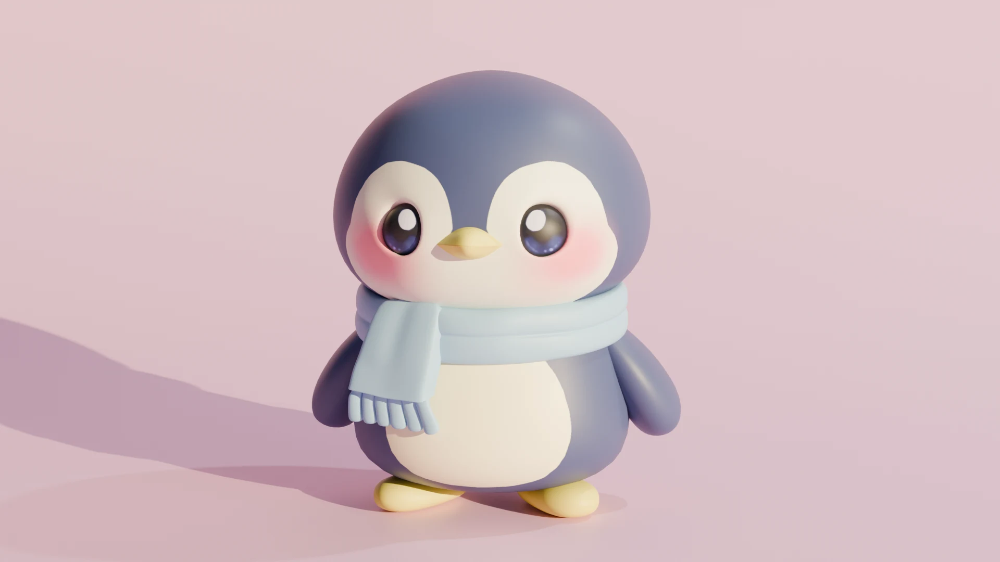
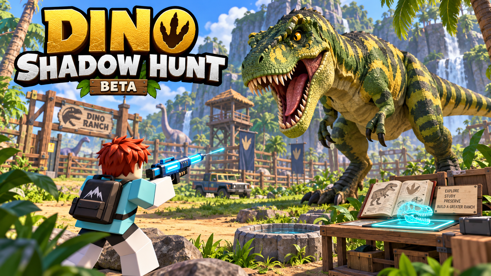

AI STRATEGY COURSE / APPLICANT PORTFOLIO
好奇心を、
未来へ。
恐竜への「大好き」を入り口に、想像する力を育ててきた。
CG・AI・プログラミングで、まだない体験を形にする。
志望先：国際工科専門職大学 東京キャンパス 工科学部 情報工学科「AI戦略コース」
作品と活動を見る ↘渡邉 ゆらら YURARA WATANABE
01 — ABOUT
WHO I AM
「好き」から始まる、
終わらない探究。
高校3年生。CG・デジタル制作とAI・プログラミングに関心があり、Blenderを使った3DCG制作と、AIを活用したアプリ開発の両方に取り組んでいます。
「表現」と「技術」を組み合わせ、新しい体験を生み出すことに興味があります。アイデアを思いつくだけで終わらせず、手を動かして形にすることを大切にしています。
02 — SELECTED WORKS
CRAFTING
EXPERIENCES.
表現と技術を、自分の手で形に。

PROJECT 01
MYURA FIT
推し活 × ボディメイク
「好き」という気持ちを、運動を続ける力に変えるフィットネスアプリ。AIを活用しながら自らコードを書き、企画・UI設計・プロトタイプ開発に取り組んでいます。
- 担当
- 企画・UI設計・実装
- 工夫
- 推しとの会話を運動継続の動機にする体験設計
- 学び
- AIのコードを理解し、自分で修正する力の必要性
PROJECT 02
YUTYRANNUS
大好きな恐竜を、自分の手で立体に。
羽毛の質感、眼の印象、暗闇から浮かび上がる光まで試行錯誤し、恐竜への興味を一つの世界として表現しました。
CONTEST ENTRY天草市立御所浦恐竜の島博物館第28回恐竜絵画コンテスト 応募作品 ↗
PROJECT 03
井戸
木、石、屋根をローポリゴンで組み立て、素材の違いと立体感を表現。

PROJECT 04
ペンギン
丸みのあるシルエット、瞳や頬、マフラーの色づかいにこだわったキャラクター。

プロモーションイメージPROJECT 05 / ROBLOX GAME
DINO SHADOW HUNT
恐竜を探し、捕まえ、自分の牧場へ。
Roblox Studioで制作している恐竜ハントゲーム。影の恐竜を麻酔銃で捕まえ、拠点で正体を明かしてコレクションに加えます。展示した恐竜からコインを集め、装備や牧場を育てていく遊びを形にしました。
AIと協働しながら、捕獲・収集の仕組み、恐竜の動き、マップやUIの改善を進めています。「恐竜が好き」という気持ちを、見る作品から遊べる体験へ広げた制作です。
IN DEVELOPMENT / BETARobloxで見る ↗開発中の作品。プレイにはRobloxとアクセス権が必要な場合があります。
03 — JOURNEY
KEEP CREATING
継続する力と、
挑戦する姿勢。
YEARS
ドラムを10年間継続
演奏を通して、人前で自分を表現する力を育ててきました。
吹奏楽部 副部長
中学生のときに副部長を務め、パーカッションを担当。アンサンブルコンサートでは、必要に応じて臨時でトランペットにも挑戦しました。
個人制作への挑戦
CG、イラスト、アプリ開発へ領域を広げています。
PERFORMANCE ARCHIVE
10年間、続けてきたドラム。
舞台に立つ経験を重ねながら、技術と表現力を育ててきました。
HIGH SCHOOL YEAR 1
文化祭 ドラム演奏
高校1年生の文化祭で、一人でステージに立ち発表。
HIGH SCHOOL YEAR 2
ドラム教室 発表会
高校2年生のとき、ドラム教室の発表会で披露。
04 — ACTIVITIES & MEDIA
つくる。そして、
世界とつながる。
文章・映像・地域での活動を通して、自分の興味や発見を発信しています。
05 — CREDENTIALS
学びを、確かな土台に。
IT・語学・CGなど、興味を広げながら取得した資格と学習成果です。
ITITパスポート
EN実用英語技能検定 2級
TOTOEIC 500点（L 300 / R 200）
ZHHSK 1級
CO色彩検定 3級
CGCGクリエイター検定 ベーシック
GTGTEC 959 / 1280点・CEFR B1（R 237 / L 283 / W 201 / S 238）
06 — VISION
WHY AI STRATEGY?
仕組みを理解し、
意図通りに
技術を扱う。
AIが生成したコードを自分で理解できなければ、問題の原因を発見し修正することが難しいと実感しました。AIやプログラミングの仕組みを体系的に学び、自分の意図通りに技術を扱える力を身につけたいと考えています。
将来はCG・AI・プログラミングを横断し、新しいサービスやコンテンツを自ら企画・開発できる人材を目指します。
志望先
国際工科専門職大学 東京キャンパス